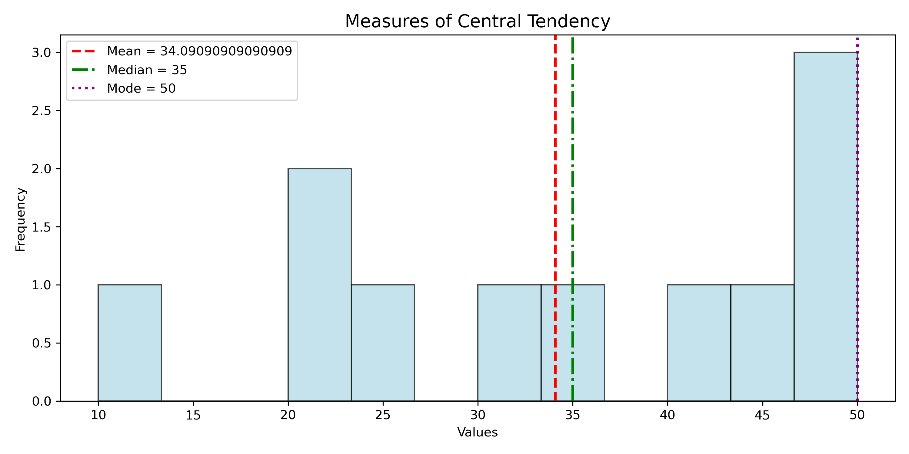
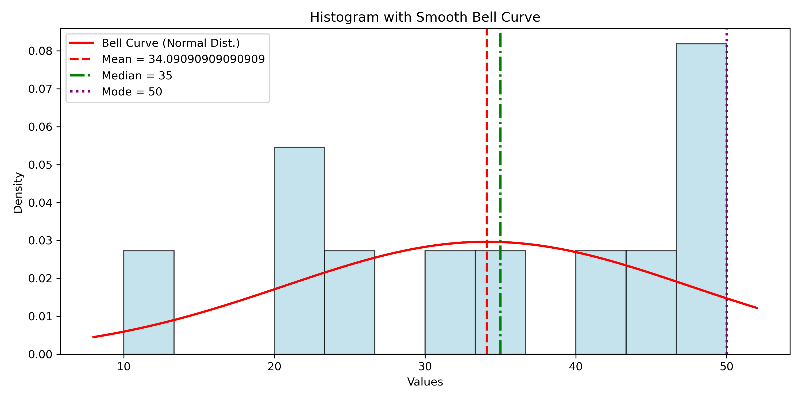
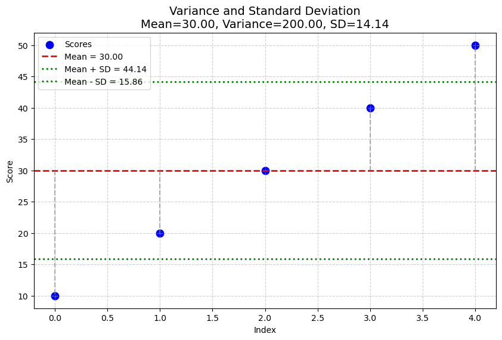
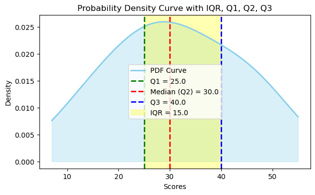
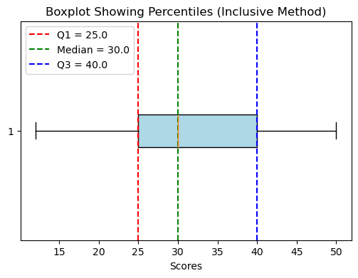

Statistics Overview¶
Statistics is the branch of mathematics that deals with the collecting, organizing, presenting, analyzing, and interpreting of data. These steps work together to turn raw information into useful knowledge.
Steps in Statistics¶
Collecting Data¶
Gathering relevant information (e.g., asking students their test scores).
Organizing Data¶
Arranging the data systematically (e.g., making tables or sorting scores).
Presenting Data¶
Showing the data clearly using tables, charts, or graphs so others can understand it.
Analyzing Data¶
Calculating summaries like averages and finding patterns.
Interpreting Data¶
Explaining what the analysis means and drawing conclusions.
Introduction to Statistics with Frequency Distribution and Histogram¶
Dataset: Score Ranges and Frequencies¶
| Score Range | Frequency |
|---|---|
| 0 - 9 | 5 |
| 10 - 19 | 8 |
| 20 - 29 | 12 |
| 30 - 39 | 7 |
| 40 - 49 | 3 |
Step 1: Collecting Data¶
The teacher collects data on how many students scored within each range on a test.
Step 2: Organizing Data¶
The scores are grouped into intervals, and their frequencies (number of students) are recorded in a table as shown above.
Step 3: Presenting Data¶
A Histogram visually shows this data:
- X-axis shows the score ranges (0-9, 10-19, etc.)
- Y-axis shows the frequency (number of students)
- Each bar's height corresponds to the frequency of students who scored in that range
- Bars are adjacent to reflect continuous data intervals
Step 4: Analyzing Data¶
- The highest frequency is 12 in the 20-29 range, indicating most students scored in this interval.
- The frequencies decrease for the highest and lowest score ranges, showing fewer students scored very low or very high.
Step 5: Interpreting Data¶
- The middle score ranges (10-29) have the most students, showing a central tendency.
- The teacher can focus on helping students who scored in the lower ranges (0-9) to improve.
Plotting Histogram in Python (Matplotlib example)¶
Population and Sample in Statistics¶
Population¶
- Population refers to the entire group or set of individuals, objects, or data points that you want to study or get information about.
- It includes every member of that group.
- The characteristics of a population (like the exact mean or standard deviation) are called parameters.
- Examples:
- All students in a school.
- Every book in a library.
- All voters in a city.
Sample¶
- A sample is a smaller subset taken from the population.
- It is used when it's impractical or impossible to collect data from the entire population.
- The characteristics of a sample (like the sample mean or sample standard deviation) are called statistics.
- Samples are used to make estimates or inferences about the whole population.
- Examples:
- 50 students selected randomly from a school.
- 100 books randomly checked in a library.
- 500 voters questioned in a city survey.
Key Differences¶
| Feature | Population | Sample |
|---|---|---|
| Definition | Entire group of interest | Subset of the population |
| Size | Usually large or complete group | Smaller part of the population |
| Data Type | Parameters (true population values) | Statistics (estimates from sample) |
| Data Collection | Census (complete enumeration) | Sampling (partial data collection) |
| Use | Gives exact information | Used to make inferences about population |
Why Use Samples?¶
- Populations can be too large or difficult to study completely.
- Sampling saves time and resources.
- Proper sampling methods allow us to make reliable conclusions about the population using sample data.
This explanation helps differentiate population and sample clearly for better understanding in statistics.
Types of Data in Statistics¶
Data is generally classified into two main types:
1️⃣ Qualitative Data (Categorical Data)¶
This data describes qualities or categories — not measured with numbers.
Types of Qualitative Data:¶
| Type | Description | Example |
|---|---|---|
| Nominal | Categories with no natural order | Gender: Male, Female, Other |
| Ordinal | Categories with a meaningful order | Shirt Size: Small, Medium, Large |
2️⃣ Quantitative Data (Numerical Data)¶
This data deals with numbers and quantities — things you can count or measure.
📌 Types of Quantitative Data:¶
| Type | Description | Example |
|---|---|---|
| Discrete | Countable numbers (whole numbers) | Number of siblings: 0, 1, 2 |
| Continuous | Measurable numbers (decimals possible) | Height: 165.5 cm, 172.3 cm |
Simple Example¶
Imagine you're collecting data from students:
| Student | Gender | Shirt Size | Age | Number of Books | Height (cm) |
|---|---|---|---|---|---|
| A | Male | Medium | 16 | 4 | 165.2 |
| B | Female | Small | 17 | 6 | 170.5 |
Breakdown:¶
- Gender → Qualitative → Nominal
- Shirt Size → Qualitative → Ordinal
- Age → Quantitative → Discrete
- Number of Books → Quantitative → Discrete
- Height → Quantitative → Continuous
| Main Type | Subtype | Description | Example |
|---|---|---|---|
| Qualitative | Nominal | No order | Colors, Gender |
| Qualitative | Ordinal | Ordered categories | Rank, Shirt size |
| Quantitative | Discrete | Countable, whole numbers | No. of students |
| Quantitative | Continuous | Measurable, can have decimals | Weight, Temperature |
Example : BMI of College Students¶
✅ Step 1: Define the Aim¶
- Estimate the average Body Mass Index (BMI) of college students.
✅ Step 2: Define Variable & Population¶
- Variable: BMI = Weight (kg) / [Height (m)]²
- Population: All college students in a university or city
✅ Step 3: Data Collection & Measurement¶
- Sampling Procedure: Stratified sampling from various departments
- Sample Size: 200 students
- Measurement Method: Weighing scale and measuring tape
✅ Step 4: Analysis Techniques¶
- Descriptive: Calculate mean BMI, SD, max, and min
- Inferential: Estimate average BMI using confidence interval; compare groups using t-tests
🔹 Data Collection Methods (How data is gathered)¶
Experiment – Researcher changes something (a variable) and observes the effect.
Example: Giving one group a new medicine and another a placebo.Observation – Researcher just watches and records without interfering.
Example: Counting how many people enter a shop in one hour.Survey – Asking questions to a sample population (via questionnaire/interview).
Example: Customer satisfaction survey.Census – Collecting information from the entire population.
Example: National population census.Existing Sources / Records – Using already available data.
Example: Hospital records, company sales reports, government databases.
| Research Method | Example Data Collected | Description |
|---|---|---|
| Experiment | Patient recovery rates with new medicine vs placebo | Researcher manipulates a variable to test cause-and-effect |
| Observation | Number of customers entering a shop per hour | Researcher watches and records behavior without interference |
| Survey | Customer satisfaction ratings from questionnaires | Asking sampled participants structured questions |
| Census | Age and gender data of every household member | Collecting data from the entire population |
| Existing Sources/Records | Hospital patient admission records | Using already collected data from databases or records |
Experiment¶
| Subject ID | Group | Treatment | Outcome Measure |
|---|---|---|---|
| 101 | Experimental | New medicine | Recovery time: 5 days |
| 102 | Control | Placebo | Recovery time: 10 days |
| 103 | Experimental | New medicine | Recovery time: 6 days |
obervation¶
| Date | Time | Observer | Observation Details |
|---|---|---|---|
| 2025-11-01 | 10:00 | Alice Smith | Counted 50 customers entering shop |
| 2025-11-01 | 14:00 | Jones | Noted 3 students interacting |
| 2025-11-02 | 09:30 | Carol Lee | Recorded 20 cars passing intersection |
Survey¶
| Respondent ID | Age | Satisfaction Rating (1-5) | Feedback Summary |
|---|---|---|---|
| 201 | 34 | 4 | Mostly satisfied |
| 202 | 45 | 3 | Average service quality |
| 203 | 29 | 5 | Excellent customer support |
Census¶
| Household ID | Members | Income Level | Education Level |
|---|---|---|---|
| 301 | 4 | $50,000 | High School Graduate |
| 302 | 3 | $75,000 | Bachelor’s Degree |
| 303 | 5 | $60,000 | Some College |
Existing Source¶
| Record ID | Source | Data Type | Summary |
|---|---|---|---|
| 401 | Hospital | Patient recovery | 100 cases of flu treatment |
| 402 | Sales Reports | Monthly sales | $10,000 revenue in October |
| 403 | Govt Database | Crime statistics | 25 reported thefts in area |
🔷 1. Probability Sampling Methods¶
🟢 a) Simple Random Sampling¶
- Explanation: Every student has an equal chance of being selected.
- Example: From a list of 500 students, randomly pick 50 using a lottery method or random number generator.
🟢 b) Systematic Sampling¶
- Explanation: Select every k-th student from a list.
- Example: Arrange all 500 students alphabetically. Pick every 10th student (10th, 20th, 30th...).
🟢 c) Stratified Sampling¶
- Explanation: Divide the population into subgroups (strata), then randomly sample from each.
- Example: Divide students into 3 courses — Science, Commerce, and Arts. Randomly pick 20 from each course.
🟢 d) Cluster Sampling¶
- Explanation: Divide population into clusters, then randomly choose entire clusters.
- Example: Out of 10 colleges in your city, randomly select 3 colleges. Survey all students in those colleges.
📊 Measures of Central Tendency¶
🧠 1. Definition¶
Measures of Central Tendency are statistical values that describe the center or typical value of a dataset.
They indicate where most of the data points lie — representing the “average” value around which data is distributed.
The three main measures are:
- Mean
- Median
- Mode
🔹 2. Mean (Arithmetic Average)¶
📘 Definition:¶
The mean is the sum of all data values divided by the number of observations.
$$ \bar{x} = \frac{\sum_{i=1}^{n} x_i}{n} $$
📊 Example:¶
Dataset: [10, 20, 30, 40, 50]
$$ \bar{x} = \frac{10 + 20 + 30 + 40 + 50}{5} = 30 $$
🔹 3. Median (Middle Value)¶
📘 Definition:¶
The median is the middle value when data is arranged in ascending or descending order.
- If n is odd → middle value
- If n is even → average of the two middle values
📊 Example:¶
Dataset: [5, 10, 15, 20, 25, 30]
Since 6 (even number of values): $$ \text{Median} = \frac{15 + 20}{2} = 17.5 $$
🔹 4. Mode (Most Frequent Value)¶
📘 Definition:¶
The mode is the data value that occurs most frequently.
📊 Example:¶
Dataset: [2, 3, 3, 5, 7, 7, 7, 8, 10]
$$ \text{Mode} = 7 $$

Mean: 34.09090909090909 Median: 35 Mode: 50
![No description has been provided for this image]()

📊 Statistics, Parameters, and Notations¶
🧮 1. Statistics vs Parameter¶
| Term | Definition | Example | Symbol (Common Notation) |
|---|---|---|---|
| Statistic | A numerical value calculated from a sample of the population. It is an estimate of the population parameter. | Sample mean of 100 students = 75 | Sample mean: $$ \bar{x} $$ |
| Parameter | A numerical value that describes a whole population. Usually unknown and estimated using sample statistics. | Population mean of all students = 76 | Population mean: $$ \mu $$ |
📚 2. Two Branches of Statistics¶
| Type | Description | Purpose | Example |
|---|---|---|---|
| Descriptive Statistics | Summarizes and describes features of a dataset. | To organize and present data meaningfully. | Mean, Median, Mode, Variance, Graphs |
| Inferential Statistics | Draws conclusions or makes predictions about a population using sample data. | To generalize beyond the data. | Hypothesis Testing, Confidence Intervals, Regression |
🧩 3. Common Notations in Statistics¶
| Concept | Descriptive (Sample) | Inferential (Population) | Meaning |
|---|---|---|---|
| Mean | $$ \bar{x} $$ | $$ \mu $$ | Average value |
| Variance | $$ s^2 $$ | $$ \sigma^2 $$ | Measure of spread |
| Standard Deviation | $$ s $$ | $$ \sigma $$ | Average deviation from mean |
| Proportion | $$ p $$ | $$ P $$ | Fraction or percentage |
| Number of observations | $$ n $$ | $$ N $$ | Size of sample or population |
| Correlation | $$ r $$ | $$ \rho $$ | Relationship between variables |
🖋️ Formula¶
| Measure | Sample Formula | Population Formula |
|---|---|---|
| Mean | $$ \bar{x} = \frac{\sum x_i}{n} $$ | $$ \mu = \frac{\sum x_i}{N} $$ |
| Variance | $$ s^2 = \frac{\sum (x_i - \bar{x})^2}{n-1} $$ | $$ \sigma^2 = \frac{\sum (x_i - \mu)^2}{N} $$ |
| Standard Deviation | $$ s = \sqrt{s^2} $$ | $$ \sigma = \sqrt{\sigma^2} $$ |
Measures of Variability (Dispersion)¶
1. Definition¶
Measures of Variability (also called Measures of Dispersion) describe how spread out or scattered the data values are around the center (mean or median).
In short, variability tells us how consistent or inconsistent the data is.
When variability is:
- Low: data points are close together (more consistent)
- High: data points are spread far apart (less consistent)
📚 2. Common Measures of Variability¶
| Measure | Description | Formula (Population) | Formula (Sample) |
|---|---|---|---|
| Range | Difference between the highest and lowest value | $$ R = X_{max} - X_{min} $$ | $$ R = X_{max} - X_{min} $$ |
| Variance | Average of squared deviations from the mean | $$ \sigma^2 = \frac{\sum (x_i - \mu)^2}{N} $$ | $$ s^2 = \frac{\sum (x_i - \bar{x})^2}{n - 1} $$ |
| Standard Deviation (SD) | Square root of variance | $$ \sigma = \sqrt{\frac{\sum (x_i - \mu)^2}{N}} $$ | $$ s = \sqrt{\frac{\sum (x_i - \bar{x})^2}{n - 1}} $$ |
| Interquartile Range (IQR) | Range between 75th and 25th percentile | $$ IQR = Q_3 - Q_1 $$ | $$ IQR = Q_3 - Q_1 $$ |
Range¶
What is Range?¶
The range of a dataset is the simplest measure of spread (variability).
$$ \text{Range} = \text{Maximum Value} - \text{Minimum Value} $$
Example with Dataset¶
Dataset:
$
[12, 18, 25, 26, 30, 34, 40, 45, 50]
$
- Minimum (min) = 12
- Maximum (max) = 50
$$ \text{Range} = 50 - 12 = 38 $$
How to Interpret Range¶
`- A small range → all values are close together.
- A large range → data is more spread out.
- ⚠️ Range depends only on 2 values (min & max), so it is very sensitive to outliers.
Example:
If one extra score = 100 is added →
$
\text{New Range} = 100 - 12 = 88
$
This makes the spread look huge, even though most values are still between 12 and 50.
Variance Formula (Simplified)¶
$$ \text{Variance} = \frac{1}{N} \sum (x_i - \mu)^2 $$
- $ x_i $ : each data value
- $ \mu $: mean
- N : number of data points
It's the average of the squared differences from the mean.
What is Standard Deviation?¶
Standard Deviation (SD) is the square root of variance.
It tells you how much the data varies from the mean in the original units (like marks, rupees, etc.).
$$ \text{Standard Deviation} = \sqrt{\text{Variance}} $$
Example: score={10,20,30,40,50}¶
🔹 Step 1: Calculate the Mean (μ)¶
$$ \text{Mean} = \frac{10 + 20 + 30 + 40 + 50}{5} = \frac{150}{5} = 30 $$
So, the average score is 30.
🔹 Step 2: Find Deviations from the Mean¶
| Score (X) | Deviation (X − μ) | Squared Deviation ((X - μ)^2) |
|---|---|---|
| 10 | 10 − 30 = -20 | (-20)² = 400 |
| 20 | 20 − 30 = -10 | (-10)² = 100 |
| 30 | 30 − 30 = 0 | 0² = 0 |
| 40 | 40 − 30 = 10 | 10² = 100 |
| 50 | 50 − 30 = 20 | 20² = 400 |
🔹 Step 3: Calculate Variance (σ²)¶
$$ \text{Variance} = \frac{\sum (X - μ)^2}{N} = \frac{400 + 100 + 0 + 100 + 400}{5} = \frac{1000}{5} = 200 $$
📌 Variance tells us how spread out the data is (in squared units).
🔹 Step 4: Calculate Standard Deviation (σ)¶
$$ \text{Standard Deviation} = \sqrt{\text{Variance}} = \sqrt{200} ≈ 14.14 $$
📌 This means, on average, each score is about 14.14 points away from the mean.
This way you’d see that:
The middle value (30) sits on the mean.
Values (10 and 50) are 20 away from the mean (biggest deviations).
Values (20 and 40) are 10 away from the mean.
these deviations give you the variance = 200 and SD ≈ 14.14.
Mean is the average score: 30
Variance shows the average of the squared differences from the mean: 200
Standard Deviation is the square root of variance: ≈ 14.14
A low standard deviation means scores are tightly clustered around the mean.
A high standard deviation means the scores are more spread out.


Percentile¶
- A percentile is a number that tells us what percentage of the data lies below that value.
- It helps us understand where a particular data point stands in the dataset.
Dataset:[12, 18, 25, 26, 30, 34, 40, 45, 50]¶
Number of elements, n = 9
$$ position = (n - 1) * q $$
Where:
nis the number of elementsqis the desired quantile (e.g., 0.25, 0.5, 0.75)
Step-by-Step Example¶
Q1 (25th percentile):¶
- $ Position = (9 - 1) * 0.25 = 2.0 → index 2 $
- Value at index 2 = 25.0
Q2 (50th percentile / Median):¶
- $ Position = (9 - 1) * 0.50 = 4.0 → index 4 $
- Value at index 4 = 30.0
Q3 (75th percentile):¶
- $ Position = (9 - 1) * 0.75 = 6.0 → index 6 $
- Value at index 6 = 40.0
IQR (Interquartile Range)¶
$ IQR = Q3 - Q1 = 40.0 - 25.0 = 15.0 $
$ Lower Bound = Q1 - 1.5 × IQR = 25.0 - 1.5 × 15.0 = 25.0 - 22.5 = **2.5** $
$ Upper Bound = Q3 + 1.5 × IQR = 40.0 + 1.5 × 15.0 = 40.0 + 22.5 = **62.5** $
| Metric | Value |
|---|---|
| Q1 | 25.0 |
| Q2 (Median) | 30.0 |
| Q3 | 40.0 |
| IQR | 15.0 |
| Lower Bound | 2.5 |
| Upper Bound | 62.5 |
Any data point outside [2.5, 62.5] would be considered an outlier. The dataset is: [12, 18, 25, 26, 30, 34, 40, 45, 50] (N = 9).
Q1 = 25.0, Q2 (Median) = 30.0, Q3 = 40.0
This means that 25% of the values are less than or equal to 25.
50% of the values are less than or equal to 30 (so 30 is the middle of the dataset).
75% of the values are less than or equal to 40.
So the box in the boxplot (between Q1 = 25 and Q3 = 40) contains the middle 50% of the data values.
The box plot shows:
Middle 50% of values (IQR = Q3 − Q1 = 40 − 25 = 15) lies between 25 and 40.
Median (30) is exactly in the center of the dataset, showing balanced distribution.
Whiskers extend to min = 12 and max = 50, and no outliers are detected.


pwd
'C:\\Users\\Lenovo\\akshatha\\STAT\\stat notes updated nov'